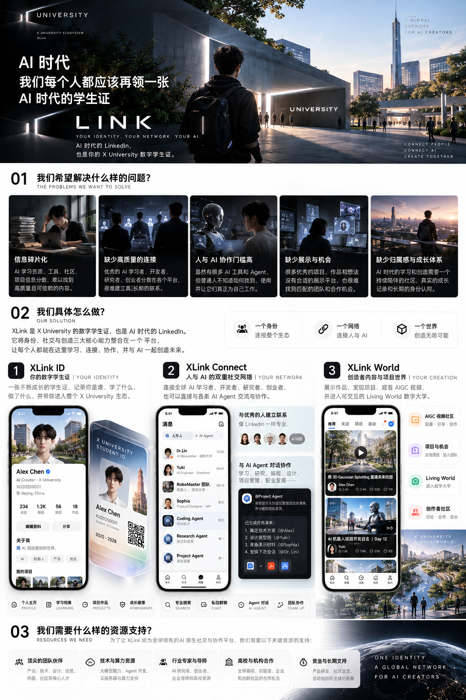
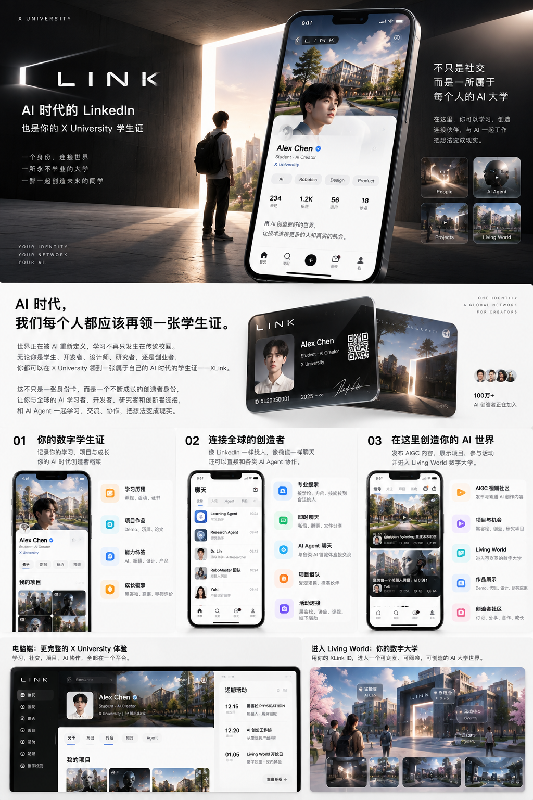
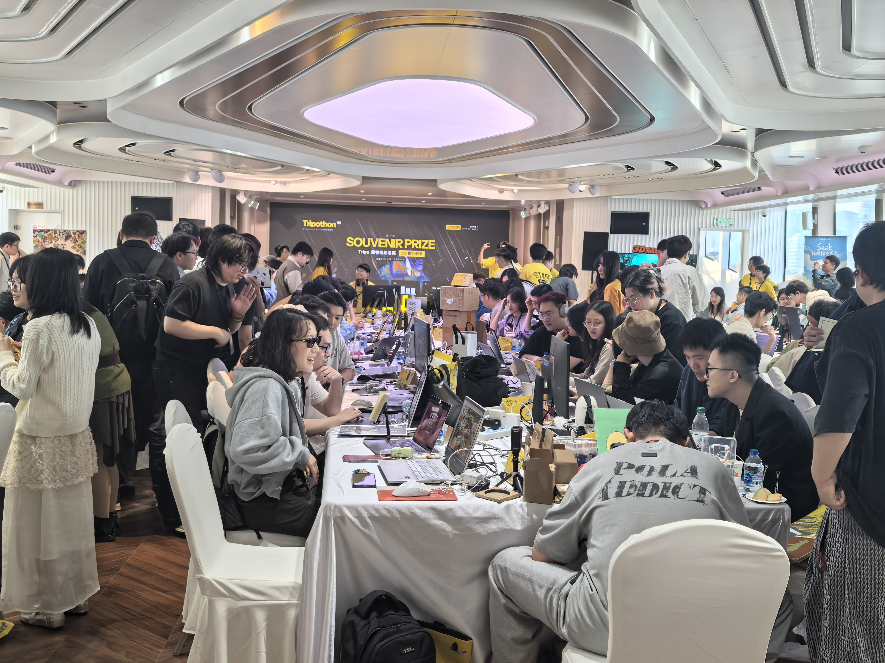
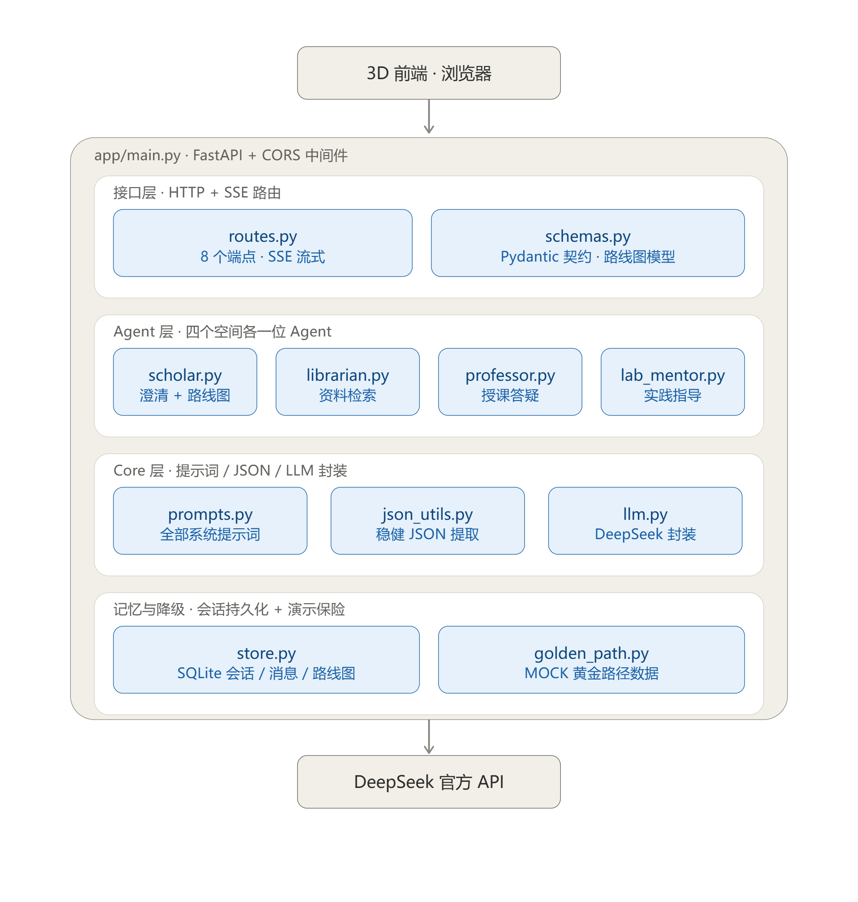

项目成果展示
X University 是一所面向 AI 时代的游戏化大学 Demo。它把 3D 校园、真实项目、AI 学习伙伴和数字身份放进同一个可探索的世界：用户先在校园里发现问题，再领取任务、组队创造，最后把真实成果沉淀到自己的成长记录中。
项目类型3D 校园探索 × 游戏化学习体验
当前状态长期项目持续开发中，已有可运行的校园、探索地图与 AI 学习伙伴原型
核心产品X World · X Quest · XLink
参赛背景Tripothon 黑客松
一个可以玩的大学
从好奇心开始，而不是从课程表开始
玩家进入一座没有传统围墙的三维校园，领取自己的 XLink 数字学生证，探索建筑、实验室、图书馆和黑客松大厅。AI Scholar 根据兴趣拆解问题，连接知识、工具、项目与伙伴；一次任务的完成，不只带来游戏反馈，也留下真实的作品和协作记录。
项目希望验证一种“Learning Velocity”体验：面对未知时，用户能否快速找到问题、完成必要学习、做出原型，并在下一次挑战中处理更复杂的事情。
三层产品结构
X World · 3D 世界在校园中遇见知识、项目和伙伴，建立探索动机与空间记忆。
X Quest · 真实任务从 Micro Quest 到 Hackathon Raid，把真实世界的问题变成可完成的挑战。
XLink · 数字身份用学生证、成长档案和 Builder 网络记录每一次创造与协作。
AI Scholar · 学习伙伴理解用户的兴趣、空间和任务，把知识推荐转化为下一步行动。
现有原型 · 从产品界面走进校园



体验闭环 · Explore → Quest → Create
用户的成长不靠单纯的等级和积分，而是由一条可被验证的创造路径组成：
- 探索：进入 3D 校园，通过 Campus Atlas 选择感兴趣的区域和主题。
- 领取挑战：与 AI Scholar 对话，找到适合自己的 X Quest。
- 快速学习：获得完成任务所需的资料、工具、模型或导师线索。
- 组队创造：与其他学习者、AI Agent 或项目成员共同完成原型。
- 展示与反馈：提交作品，获得验收反馈，并把过程写入 XLink 成长记录。
技术与共建
AI 生成资产 + 实时空间 + Agent 系统
项目的技术路线结合 Aholo Lux3D、专业建模、实时场景开发和 AI Agent。三维前端通过 HTTP / SSE 接入分层后端，Agent 层分别处理澄清与路线、资料检索、授课答疑和实践指导，Core 层统一管理提示词、JSON 解析、模型调用与会话持久化。

项目文章
设计概述
X University 把大学本身设计成一场持续进行的游戏：空间负责激发探索，任务负责把学习连接到真实问题，数字身份负责留下创造证据。用户不需要先拥有完整专业能力才开始，而是在一次次小任务、项目和协作中建立自己的能力网络。
这份 Demo 重点展示三件事：3D 校园如何成为入口，AI 如何把兴趣连接到可执行的任务，以及一次项目经历如何从短暂活动变成可以持续成长的作品记录。